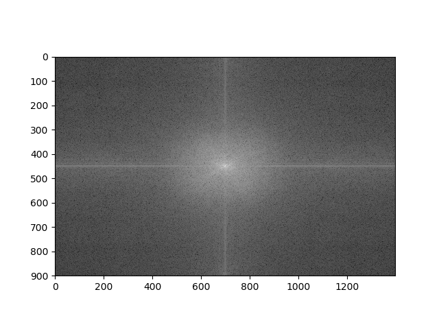
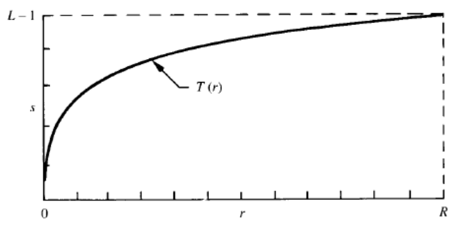
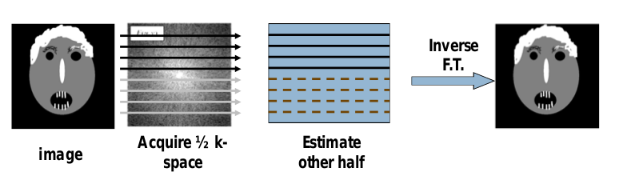

class: center, middle ## Images in Frequency Domain By: Eslam Adel email: eslam.a.mahmoud@eng1.ce.edu.eg --- class: left, top ### 2D Discrete Fourier Transform -- For Image I(x,y) DFT is I(u,v) where -- <img style="width:100%" src="../../images/DFT.png"> --- class: left, top ### Basis Functions -- <img style="width:60%" src="../../images/Basis_functions.png"> --- class: left, top #### Example -- <img style="scale:100%" src="../../images/Original_Image.png"> --- class: left, top #### Example Cont'd --  --- class: left, top ### Properties of FT -- Complex ( Magnitude and Phase) -- Dynamic Range Compression --  --- class: left, top ### Properties of FT Cont'd Fourier transform of the image is symmetric -- Application MRI Half Fourier Imaging --  -- Where redundancy comes from ?? --- class: left, top ### Properties of FT Cont'd -- DFT is periodic Discretization implies periodicity -- No one to one corresponding $$I(u,v) = T(I)(x,y)$$ not $$T(I(x,y))$$ --- class: left, top #### Inverse Fourier Transform <img style="width:100%" src="../../images/IFT.png"> --- class: left, top #### Fourier Filtering <img style="width:100%" src="../../images/Fourier_Filtering.png"> ---